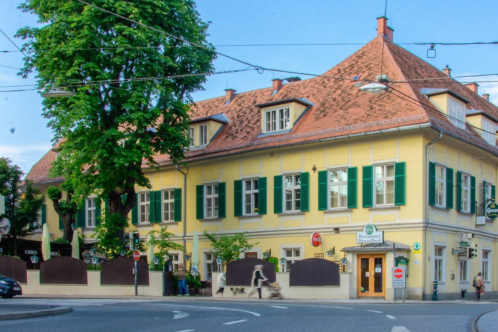

Über uns
Seit Generationen Wirtshaus.
Ehrlich gekocht, freundlich serviert, mitten in Graz. Was den Brandhof ausmacht, sieht man am besten selbst.
Das Haus
Ein Wirtshaus, kein Konzept.
Der Brandhof in der Gleisdorfergasse ist seit vielen Jahren eine fixe Adresse für alle, die gutes Essen ohne Schnickschnack mögen: steirische Wirtshausküche, ehrlich gekocht, durchgehend warm von Mittag bis in die Nacht.
Nur ein paar Schritte vom Jakominiplatz und der Oper entfernt treffen sich bei uns Stammgäste, Familien, Kollegen nach der Arbeit und Gäste aus aller Welt. Im Sommer im Gastgarten unter dem Kastanienbaum, im Winter in der Stube.
- 11 bis 24durchgehend warme Küche
- Gastgartenmitten in der Stadt
- Steirischregional und saisonal
360° Rundgang
Schauen Sie sich bei uns um.
Stube, Saal und Gastgarten: ein virtueller Rundgang durch den Brandhof, bevor Sie uns besuchen.
Einblicke
Bildergalerie
Wir freuen uns auf Sie
Ihr Tisch wartet schon.
Reservieren Sie online in einer Minute oder rufen Sie uns an. Für Gruppen ab zwölf Personen gerne telefonisch.
- Dienstag bis Samstag11:00 bis 24:00 Uhr
- Küchedurchgehend bis 23:00 Uhr
- Sonntag, Montag, FeiertageRuhetag
- AdresseGleisdorfergasse 10, 8010 Graz